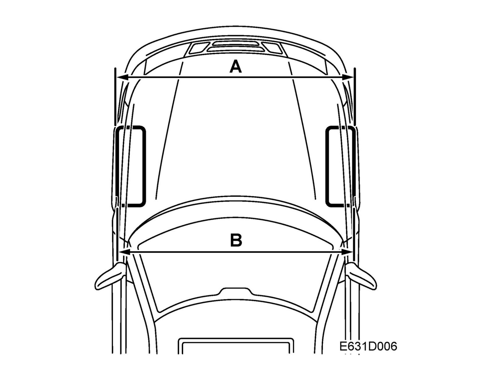
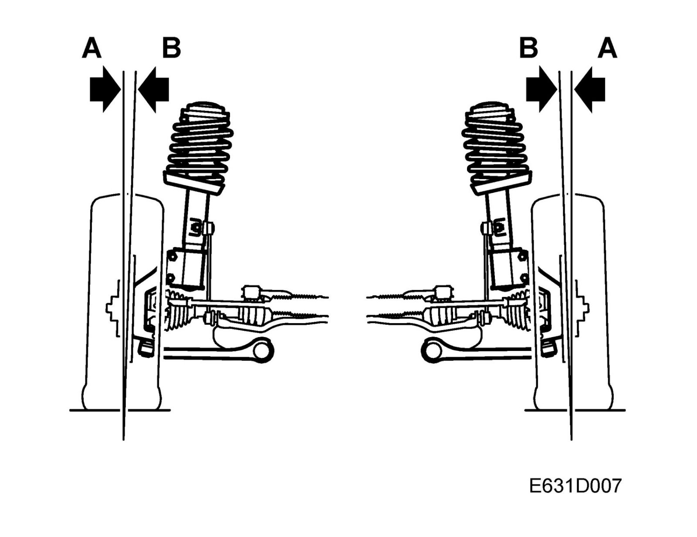
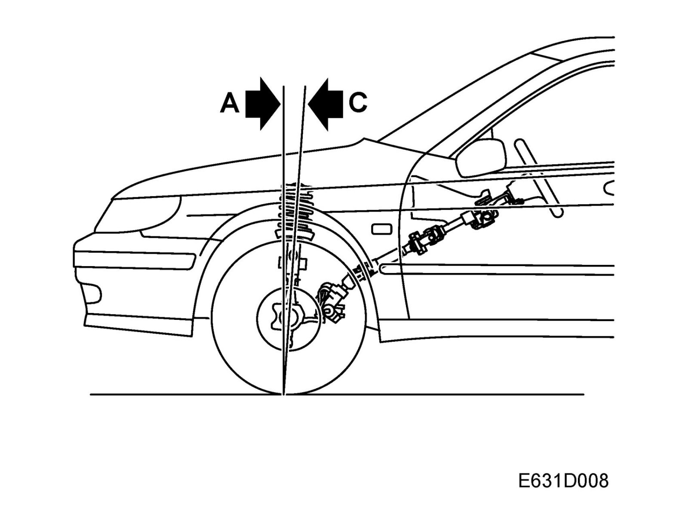
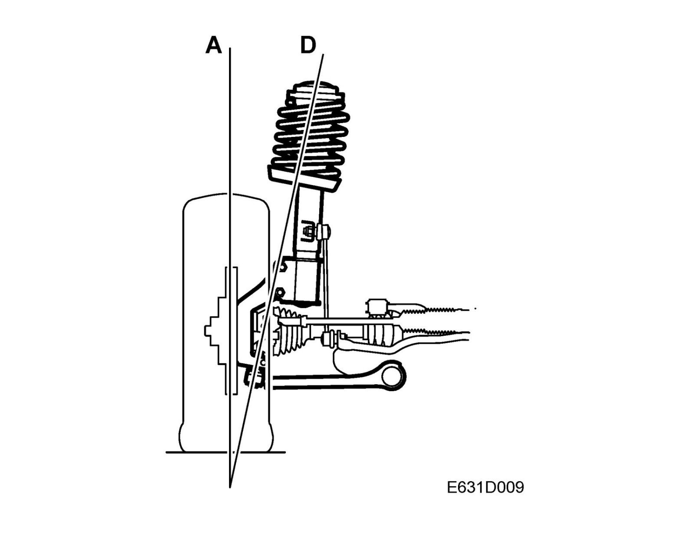
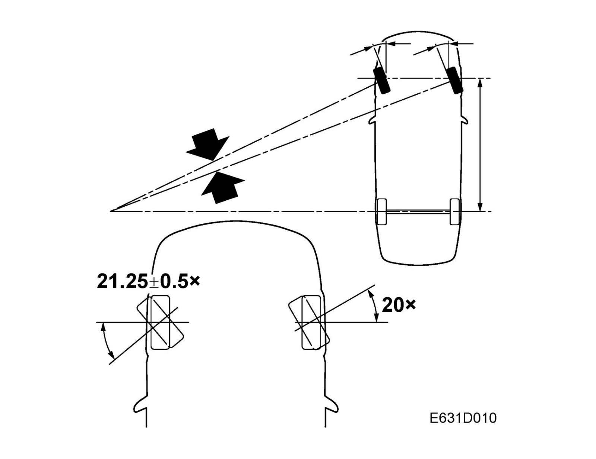

Wheel Geometry
Wheel geometry
Toe-in
Toe-in is the difference between A and B. If the wheels are exactly parallel and the dimensions A and B are equal, toe-in will be zero.
Toe-in must always be positive, i.e. dimension B must always be greater than dimension A. B less A = positive toe-in.
Front wheel toe-in is adjusted by lengthening or shortening the track rods. Correct toe-in improves directional stability. Toe-in must be adjusted by an equal amount on both left-hand and right-hand track rods to ensure that the steering wheel spokes will be positioned symmetrically.
Rear wheel toe-in is adjusted with an off-center bolt located in the toe-rod mounting in the subframe. Rear wheel toe-in is always measured relative to the car's axis of symmetry, which is an imaginary line drawn between the center points of the front and rear axles.
In connection with wheel alignment, equipment for 4-wheel measurement must be used; the rear wheels must be aligned before the front wheels since they serve as reference points for the front wheels. The car's behavior on the road is dependent on correct wheel alignment.
Incorrect toe-in can cause vibrations which lead to pronounced tire wear since the tires will slide laterally. Excessive toe-in often causes wear on the outer tire shoulders.
Camber

Camber refers to the angle (B) formed between the wheel and the vertical (A), see figure.
If the wheel leans outwards, the camber is said to be positive (+). If the wheel leans inwards, the camber is said to be negative (-). The normal camber for the car is negative.
Wheel camber cannot be adjusted.
Rear camber is adjusted by rotating an off-center bolt located in the lower suspension arm mounting in the subframe.
Caster

Caster is the angle, indicated in degrees, at which the steering knuckle axis (C) deviates from the vertical (A) when viewed from the side.
When the steering knuckle inclines towards the rear as shown in the figure, caster is said to be positive (+). When the steering knuckle inclines towards the front, caster is said to be negative (-).
Caster tends to keep the wheels pointing straight ahead and in doing so assists the driver in steering a straight path. In addition, more powerful steering wheel return action is obtained through a greater caster angle.
Caster is not adjustable.
Inclination of imaginary swivel-axis line

Imaginary swivel-axis line is the angle indicated in degrees between the swivel axis (D) (an imaginary line running through the ball bearing in the upper spring cup and the steering swivel member's ball joint) and the vertical (A).
Inward inclination is positive and outward inclination is negative. Correct inclination makes for lighter steering and tends to keep the wheels pointing straight ahead.
Imaginary swivel-axis line cannot be adjusted.
Steering angle

The ideal steering angle for perfect rolling of all wheels when cornering varies according to car speed and tightness of the curve, owing to the spring oscillation and deflection of the tires.
Since the steering arms are pointed slightly inwards in relation to the car's direction, the angle of the inside wheel when cornering will be slightly greater than that of the outside wheel.